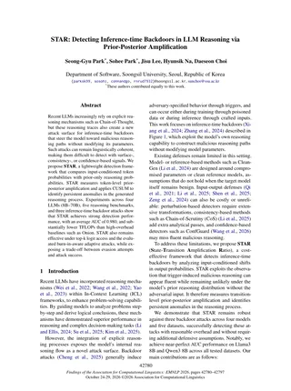
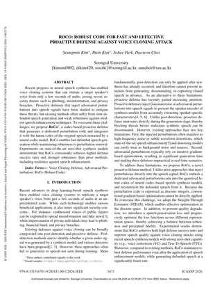
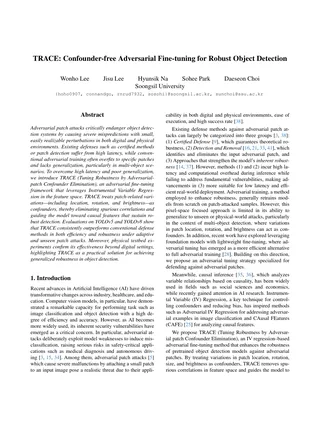
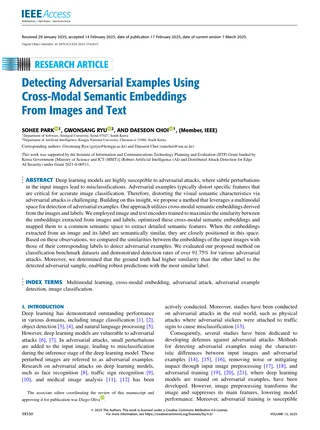

AI Model Security & Safety
Backdoors, red teaming, safety evaluation, and defenses for large language and other AI models.
Research Professor · AI Security Researcher
I am a Research Professor at the AI Safety Center, Soongsil University. My research centers on the security, safety, and trustworthiness of artificial intelligence systems.
Current work spans AI model security and safety, privacy and trustworthy AI, generative AI security, and adversarial machine learning across vision, speech, language, and multimodal systems.
Backdoors, red teaming, safety evaluation, and defenses for large language and other AI models.
Personal-attribute inference, privacy leakage and suppression, and reliable evaluation of AI systems.
Detection and proactive defense against voice cloning, face manipulation, and other generative AI threats.
Adversarial attacks, detection, and robust defenses across vision, speech, and multimodal learning systems.
Preventing sensitive-information inference and evaluating privacy risks during foundation-model operation.
Project Details →Led project operations and research execution for robust AI and distributed attack-detection technologies.
Project Details →Research on security threats to generative AI systems and the development of defensive countermeasures.
Project Details →


